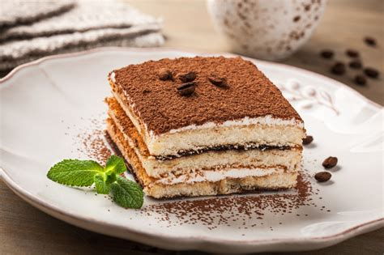
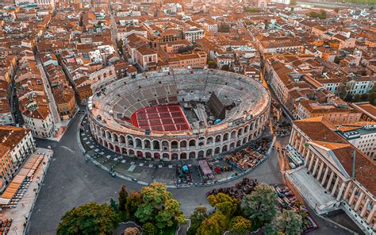
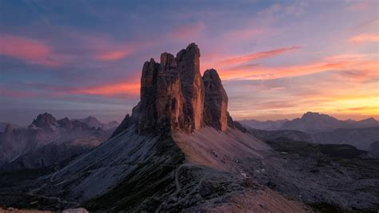
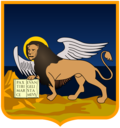

Veneto
Overview
Veneto is a region in northeastern Italy, known for its rich culture, history, and stunning landscapes. It includes iconic cities such as Venice, Verona, and Padua. Veneto offers a blend of mountains, lakes, and Adriatic coastline. It’s one of the most visited regions in Italy thanks to its artistic heritage, food, and scenic beauty.
Quick Facts
- Capital: Venice
- Regional Language/Dialect: Italian, Venetian
- Population: ~4.8 million
- Famous For: Venice, Carnival, Prosecco wine
- Fun Fact: Juliet’s Balcony in Verona attracts thousands of lovebirds every year!
Popular Dishes
Squid Ink Risotto

Sarde in Saor

Polenta with Salt Cod

Tiramisù

Famous Landmarks
Venice

Verona Arena

Belluno Dolomites

Padua

Best Time to Visit
The best time to visit Veneto is in the spring (April–June) and early autumn (September–October), when the weather is mild and crowds are fewer. Summer is great for the beaches, while winter is perfect for exploring the Dolomites or enjoying Christmas markets.
Regional Symbols
- Flag:
- Emblem: 